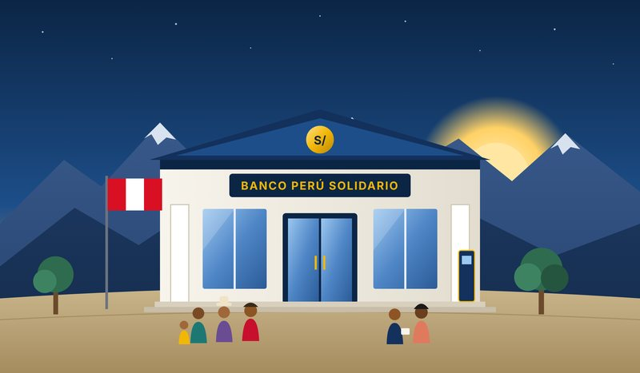
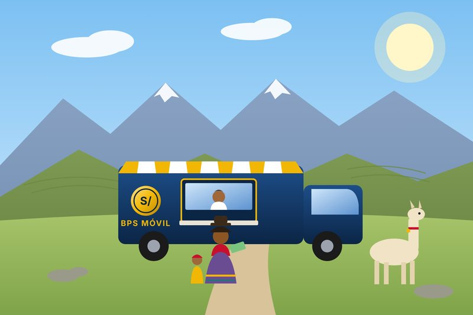

Entidad de banca estatal
Sostenemos el pago del Perú que trabaja
Procesamos la planilla de las entidades del Estado y entregamos los programas sociales del Gobierno a través de la red de agencias con mayor alcance del país. Todos los meses, millones de servidores públicos y beneficiarios reciben su pago a través de BPS.
- Agencias a nivel nacional
- 1,850
- Servidores públicos con haber pagado por BPS
- 642,300
- Millones de soles desembolsados al mes en sueldos
- S/ 4,820
- Beneficiarios de programas sociales atendidos
- 1,140,000
RF-5.1 · Programas sociales
¿Cómo cobrar tu subsidio?
Estos son los programas sociales que paga BPS. Revisa los requisitos, inscríbete en línea y cobra en ventanilla, cajero o con tu tarjeta BPS Solidaria.
-
Apoyo Directo al Hogar
S/ 200 bimestral
Transferencia a hogares en pobreza que cumplen controles de salud y asistencia escolar.
Ver requisitos
- DNI vigente del titular del hogar.
- Hogar con clasificación socioeconómica de pobreza.
- Gestantes o menores de 19 años en el hogar.
-
Bono Vejez Digna
S/ 250 bimestral
Subvención económica para adultos mayores de 65 años que no reciben pensión.
Ver requisitos
- DNI vigente y 65 años cumplidos.
- Clasificación de pobreza extrema.
- No percibir pensión de ningún régimen.
-
Sueldo Joven Rural
S/ 400 mensual
Apoyo a jóvenes de zonas rurales que estudian o se capacitan en un oficio.
Ver requisitos
- DNI vigente, entre 18 y 29 años.
- Residir en un centro poblado rural.
- Constancia de estudios o capacitación.
-
Cuna y Nutrición
S/ 150 mensual
Apoyo alimentario para gestantes y niñas o niños menores de 3 años.
Ver requisitos
- DNI de la madre y de la niña o niño.
- Control prenatal o de crecimiento al día.
- Residir en un distrito focalizado.
| Programa | Monto | Periodicidad | Público objetivo | Dónde cobrar |
|---|---|---|---|---|
| Apoyo Directo al Hogar | S/ 200.00 | Bimestral | Hogares en pobreza | Agencia, cajero, agencia móvil |
| Bono Vejez Digna | S/ 250.00 | Bimestral | Adultos de 65 años a más | Agencia con atención preferente |
| Sueldo Joven Rural | S/ 400.00 | Mensual | Jóvenes rurales de 18 a 29 años | Tarjeta BPS Solidaria, billetera |
| Cuna y Nutrición | S/ 150.00 | Mensual | Gestantes y menores de 3 años | Agencia, agencia móvil |
RF-5.2 · Consulta en línea
Consulta tu fecha de pago
Ingresa tu DNI y te mostramos el día que te corresponde cobrar según el último dígito de tu documento, para que te organices y evites colas innecesarias.
Consulta simulada con fines académicos.
Trámites disponibles
Cada trámite tiene un código de procedimiento (TUPA) visible en la constancia que se entrega al finalizar la atención.
-
T-101
Pago de sueldos del sector público
Acreditación y cobro de haberes de planillas de entidades estatales adscritas a BPS.
-
T-114
Desembolso de programas sociales
Cobro de bonos y subsidios del Estado en ventanilla o cajero, sin costo de mantenimiento.
-
T-208
Giro nacional
Envía dinero a cualquier agencia del país. Comisión de 1.5 % del giro, mínimo S/ 5.00.
-
T-330
Reclamos y seguimiento
Registro de incidencias sobre pagos no acreditados, cobros indebidos o atención en agencia.
Red de atención
Red de agencias por región
Ubica la agencia más cercana y evita colas: hay una BPS en cada provincia del país.
1,850 agencias
-
Lima Metropolitana
412 agencias
-
Costa norte y sur
486 agencias
-
Sierra
661 agencias
-
Selva
291 agencias


Llegamos donde otros no llegan
Nuestras agencias móviles recorren cada mes las comunidades de la sierra y la selva para que ningún beneficiario se quede sin cobrar.
- Atención en quechua, aimara y asháninka.
- Cobro sin costo de mantenimiento.
- Giros nacionales a cualquier agencia del país.